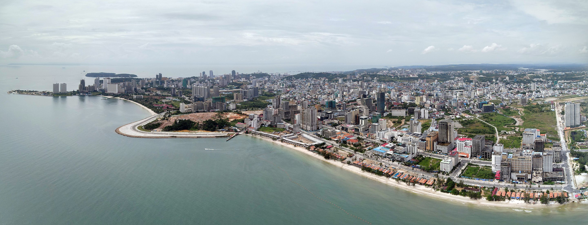
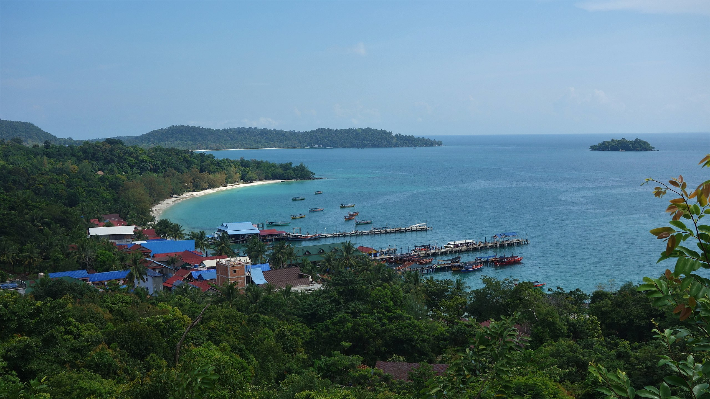

Preah Sihanouk (Khmer: ព្រះសីហនុ, 'Holy Sihanouk'), also Sihanoukville, is a province (khaet) in southwest Cambodia on the Gulf of Thailand. The provincial capital, also called Sihanoukville, is a deep water port city and a steadily growing and diversifying urban center on an elevated peninsula. First established as Kampong Som (Khmer: កំពង់សោម, lit. 'The Som Rattan Port'), the province was later renamed in honor of former King Norodom Sihanouk, who orchestrated the establishment of Sihanoukville city and the Sihanoukville municipality as this took place alongside the construction of the Sihanoukville Port, which commenced in June 1955. The only deep water port of Cambodia, it includes an oil terminal and a transport logistics facility.
 